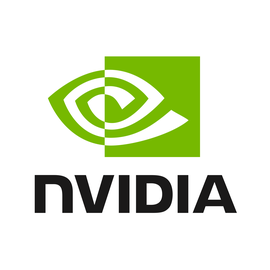

Research
: * equal contribution, Highlighted Papers
|
|
|
Differentiable Light Transport with Gaussian Surfels via Adapted Radiosity for Efficient Relighting and Geometry Reconstruction
Kaiwen Jiang,
Jia-Mu Sun,
Zilu Li,
Dan Wang,
Tzu-Mao Li,
Ravi Ramamoorthi
ACM Transactions on Graphics (SIGGRAPH Asia), 2025
[Paper] /
[Page]
We adopt Gaussian surfels as the primitives and build an efficient framework for differentiable light transport,
inspired by classic radiosity theory, enabling efficient relighting and geometry reconstruction.
|
|
|
Neural Control Variates with Automatic Integration
Zilu Li*,
Guandao Yang*,
Qingqing Zhao,
Xi Deng,
Leonidas Guibas,
Bharath Hariharan,
Gordon Wetzstein
SIGGRAPH, 2024
We present a method that uses arbitrary neural network architectures as control variates with automatic
differentiation to create unbiased, low-variance, and numerically stable Monte Carlo estimators for various
problem setups.
|
|
|
Neural Cache for Monte Carlo Partial Differential Equation Solver
Zilu Li*,
Guandao Yang*,
Xi Deng,
Christopher De Sa,
Bharath Hariharan,
Steve Marschner
SIGGRAPH Asia, 2023
[Page]
Using neural field caches to reduce variance in Monte Carlo PDE solvers. Our method excels when computing is
limited and enables effective bias and variance trade-off.
|
|
|
BT^2: Backward-compatible Training with Basis Transformation
Yifei Zhou*,
Zilu Li*,
Abhinav Shrivastava,
Hengshuang Zhao,
Antonio Torralba,
Taipeng Tian,
Ser-Nam Lim
ICCV, 2023
[Paper]
Introducing a Basis Transformation Method to avoid backfilling in learning new representations for modern
retrieval systems.
|
|

|
Research Scientist Intern, High-Fidelity Physics Research Team
Summer 2025 - Present
Mentors:
Rohan Sawhney, David I. W. Levin, Ken Museth
|
Miscellaneous
Outside of research, I like rock climbing, making ceramics (both hand-building and wheel throwing), and playing guitar. I used to sing in a band called Cornell Interlude.
|
|
{kind=link}